Запуск междугородней доставки крупногабаритных товаров
Крупногабаритные товары (товары 30+кг 220+см в сумме сторон) нельзя было отправить между городами через партнеров Авито.
Нужно было обеспечить запуск направления чтобы снизить риски по потери 27% Goods GMV из-за доли рынка маркетплейсов.
Доставка крупногабаритных товаров между пунктами выдачи
Первым шагом адаптировали обычный флоу доставки между пунктами выдачи, чтобы подсветить, что требуется от продавца из-за особенностей крупногабаритной доставки
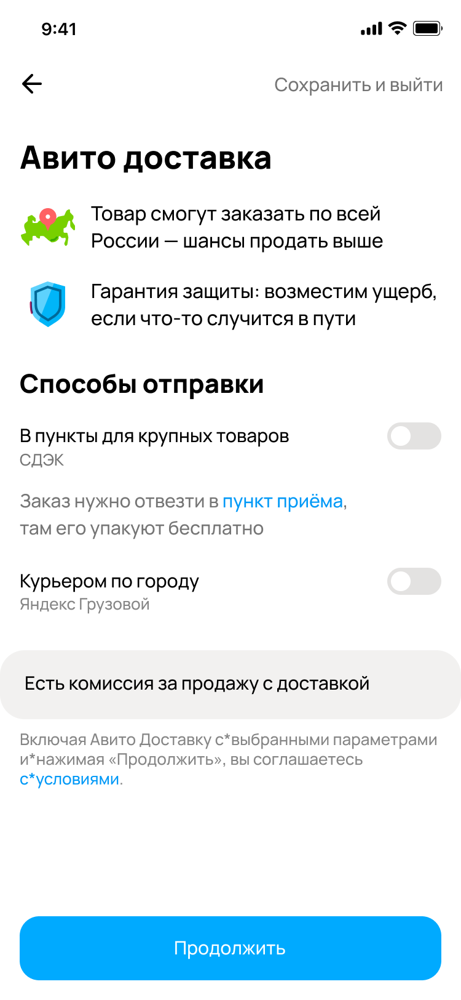
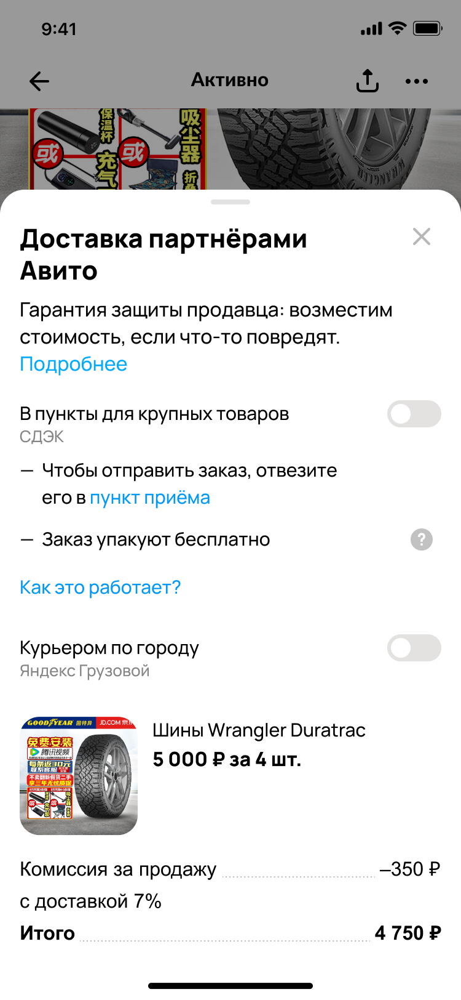
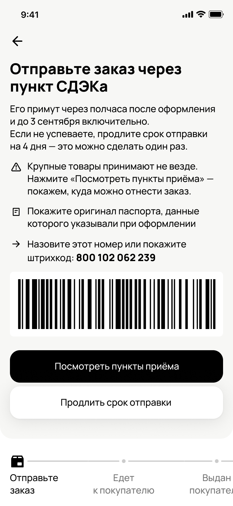
После реализации доставки между пунктами приступили к доставке из пункта выдачи до двери
Как это работает на практике:
Чтобы разблокировать запуск из пункта до двери, нужно было исправить ряд проблем в классической курьерской доставке
- Нельзя валидировать наличие частей адреса: заполнены ли квартира или этаж
- Курьеры уезжали не туда, когда мы подставляли адрес
- Нужно каждый раз вводить адрес, если не было опыта заказа курьером
- Не поддержка адресов/избранность — универсальные паттерны по работе с адресами внутри приложения
Мы сделали редизайн курьерки
Запуск редизайна увеличил покрытие адресами на 0.3% и конверсию из клика на «Купить» в переход к оплате на 1%
Вот как он выглядит ↓
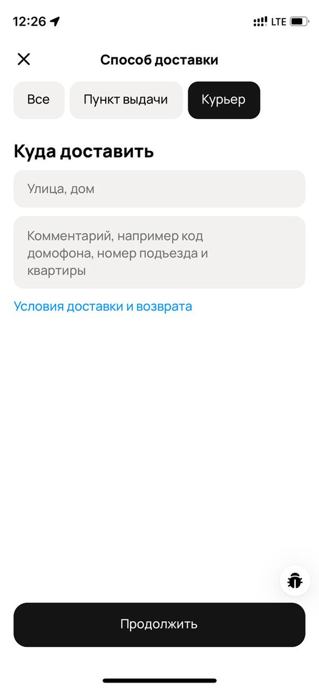
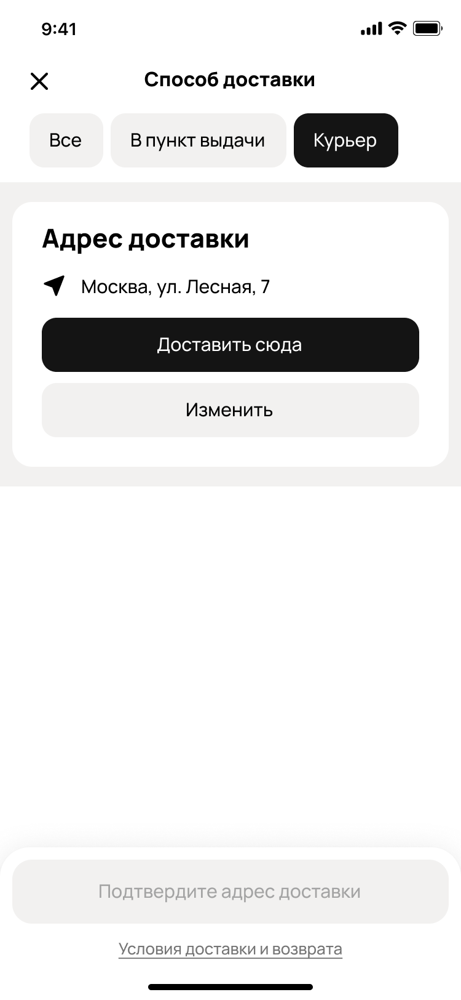
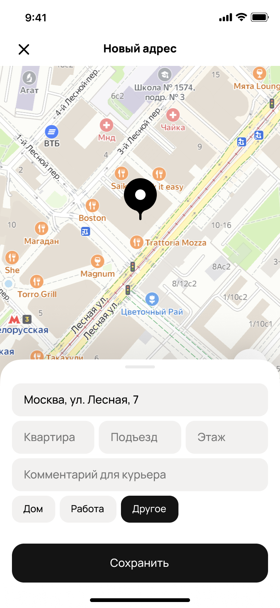
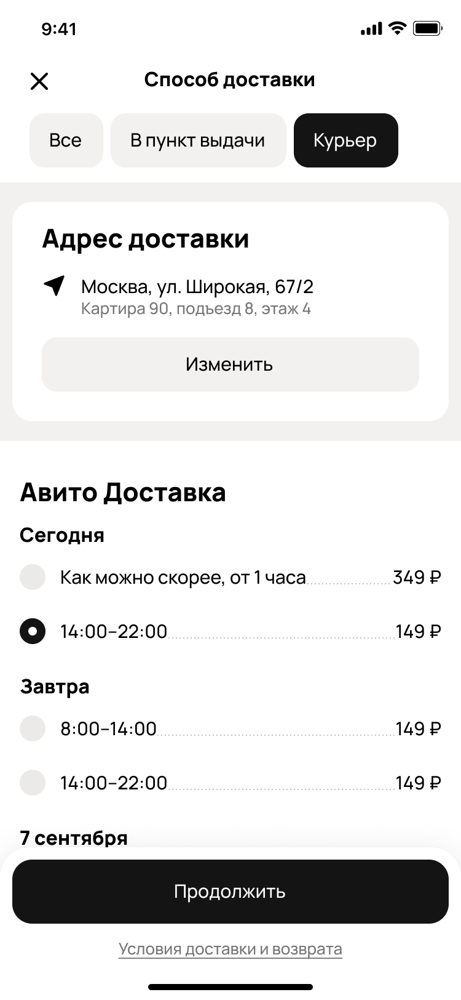
И адаптировали чекаут под разных провайдеров и способы получения
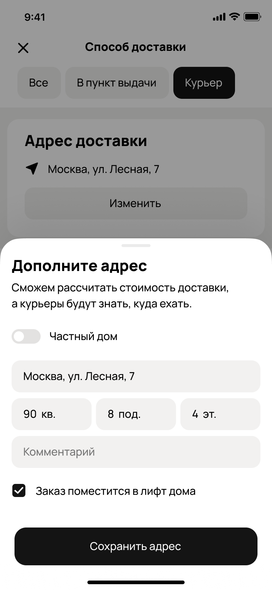
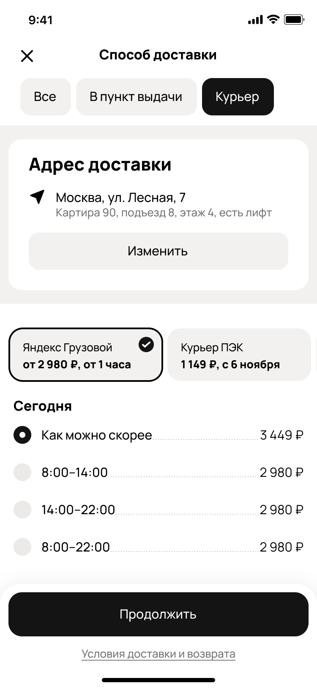
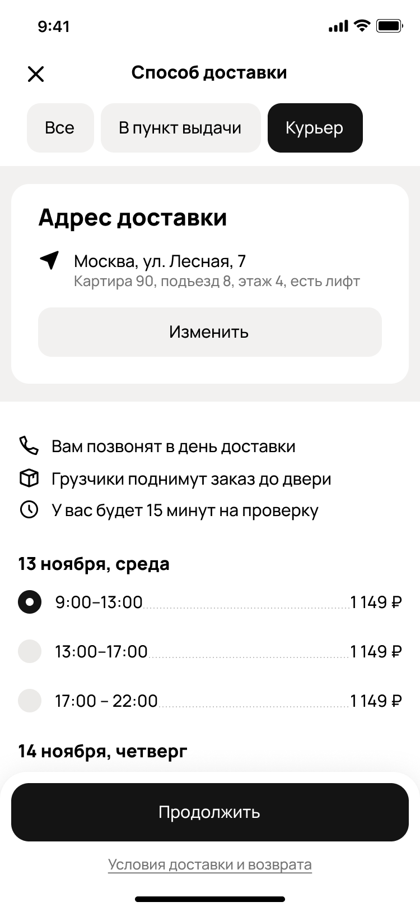
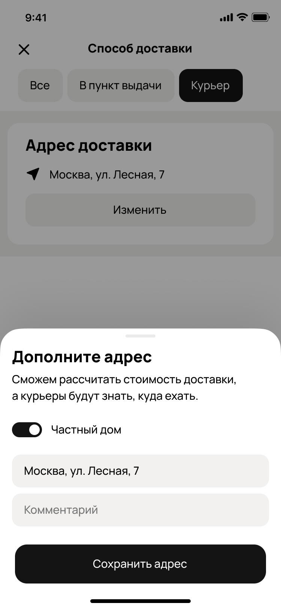
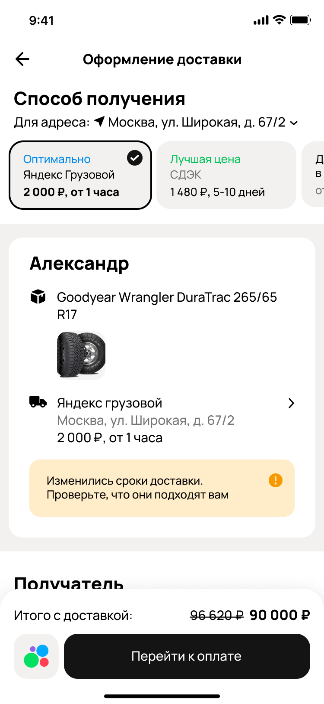
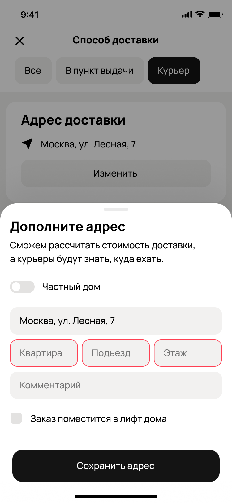
После оформления заказа его нужно отслеживать
Мы проработали новый флоу страницы заказа для обоих ролей — и продавца, и покупателя, с учетом специфики нового способа доставки, для всех платформ
КГТ доставка принесла 168k оплаченных товаров в первые месяцы запуска
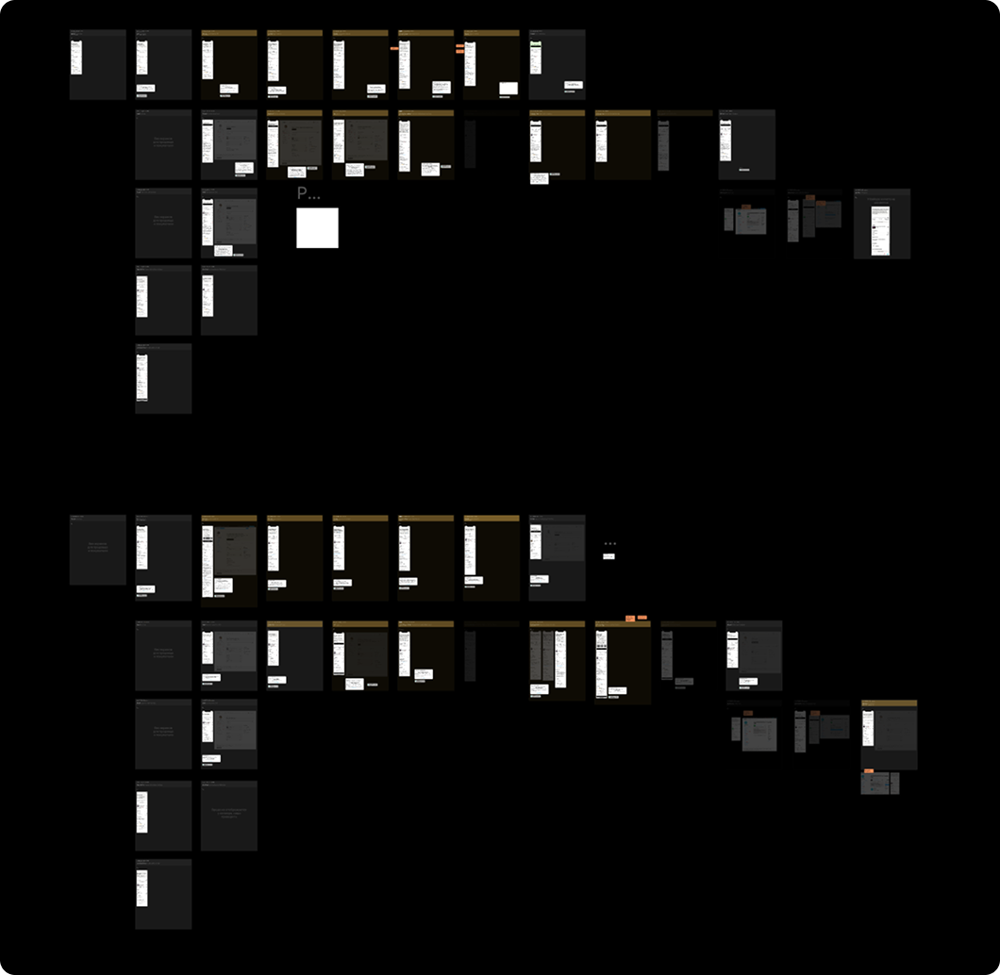